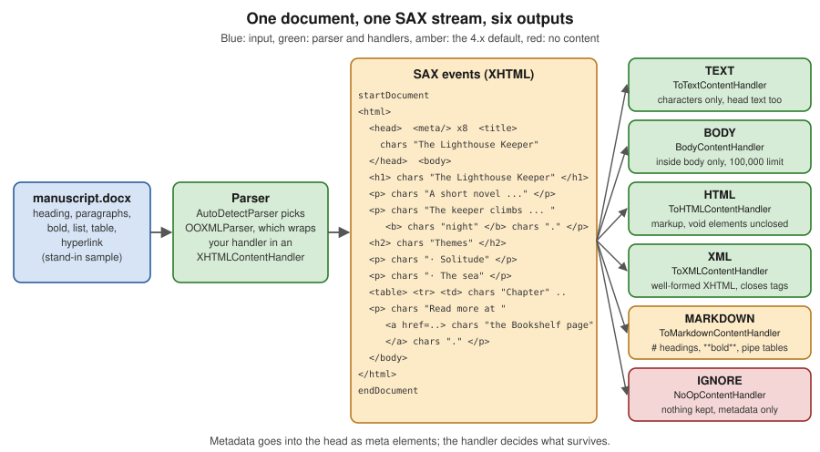

Content Handlers & Output Formats
|
This content was generated with the assistance of AI and should be verified against the official documentation before being relied on in production. |
Baseline date: 2026-10-12. This page was written against Apache Tika 4.1.0 (the latest release on Maven Central on that
date) with the 3.3.x differences noted, Java 21 and later for the examples (Tika 4.x needs Java 17), Spring Boot 4.x on
Spring Framework 7 and the Docker image apache/tika:4.1.0. A Tika parser does not return text. It pushes a stream of
SAX events describing an XHTML document into a ContentHandler that you supply, and the handler decides what the
caller gets: plain text, HTML, well-formed XHTML, Markdown, only the links, a stream written to disk, or nothing at all.
Choosing the handler is therefore choosing the output format, the memory profile and the character limit of an
extraction. This page explains the event model, every handler that ships with Tika, the factory that builds them from a
name or a JSON setting, how the 4.x default became Markdown, and shows the same Bookshelf file, manuscript.docx,
in every format side by side.
The handlers live in tika-core (package org.apache.tika.sax), so they need no extra dependency beyond the ones from
Setup & Installation; the one exception, the boilerpipe
main-content handler, has its own artifact and is covered below. How a parser is chosen and called is the subject of
Parser API & AutoDetectParser; where the metadata goes
is covered in Metadata.
All examples on this page were compiled and run against Tika 4.1.0. The input is a small stand-in manuscript.docx
(a heading, two paragraphs, a bold word, a two-item list, a three-row table and a hyperlink), so character counts
differ from the real Bookshelf file. The command line outputs were produced with the TikaCLI main class of
tika-app 4.1.0 with its dependencies on the classpath, which is what java -jar tika-app.jar runs; the server
endpoints are quoted from the 4.1.x documentation and were not run for this page.
The model: parsers emit XHTML as SAX events
Every Tika parser, whatever the format, translates its input into the same small vocabulary: the XHTML elements
html, head, title, meta, body, h1 to h6, p, div, b, i, a, ul, ol, li, table, tr, td,
pre, img and a few more, delivered as startElement, characters and endElement calls on a SAX
ContentHandler. A handler is a SAX consumer: it receives the stream once, in order, and cannot go back. The parser
neither knows nor cares what the handler does with the events. That is how one extraction pipeline serves a text index,
an HTML preview, a Markdown chunker and a link crawler.
Two things follow from the design:
-
Structure survives. Headings, paragraphs, lists, tables and links are events, not formatting hints, so a handler that cares about them (
ToMarkdownContentHandler,LinkContentHandler, your own) can use them. A parser that only knows text (a plain.txtfile) emits only paragraphs. -
Metadata is separate. The parser also fills a
Metadataobject. The only place the two meet is the XHTMLhead, which carries the metadata asmetaelements, as shown below.
A real event stream
The following handler prints every event instead of producing output. Run on the stand-in manuscript.docx it shows
what every other handler in this page receives.
import java.io.IOException;
import java.nio.file.Path;
import org.apache.tika.exception.TikaException;
import org.apache.tika.io.TikaInputStream;
import org.apache.tika.metadata.Metadata;
import org.apache.tika.parser.AutoDetectParser;
import org.apache.tika.parser.ParseContext;
import org.xml.sax.Attributes;
import org.xml.sax.SAXException;
import org.xml.sax.helpers.DefaultHandler;
public class SaxTrace {
/** A handler that prints every event instead of producing output. */
static class Tracer extends DefaultHandler {
private int depth;
@Override
public void startDocument() {
System.out.println("startDocument");
}
@Override
public void startElement(String uri, String local, String qName, Attributes atts) {
System.out.println(" ".repeat(depth++) + "start <" + local + ">");
}
@Override
public void endElement(String uri, String local, String qName) {
depth--;
System.out.println(" ".repeat(depth) + "end </" + local + ">");
}
@Override
public void characters(char[] ch, int start, int length) {
String text = new String(ch, start, length).replace("\n", "\\n").replace("\t", "\\t");
System.out.println(" ".repeat(depth) + "chars \"" + text + "\"");
}
@Override
public void endDocument() {
System.out.println("endDocument");
}
}
public static void main(String[] args) throws IOException, SAXException, TikaException {
try (TikaInputStream in = TikaInputStream.get(Path.of("manuscript.docx"))) {
new AutoDetectParser().parse(in, new Tracer(), new Metadata(), new ParseContext());
}
}
}Output (the eight meta events in the head are shortened to one, and the table to its first row):
startDocument
start <html>
start <head>
start <meta>
end </meta>
(seven more meta elements)
start <title>
chars "The Lighthouse Keeper"
end </title>
end </head>
start <body>
start <h1>
chars "The Lighthouse Keeper"
end </h1>
start <p>
chars "A short novel by Ana Torres."
end </p>
start <p>
chars "The keeper climbs the stairs every "
start <b>
chars "night"
end </b>
chars "."
end </p>
start <h2>
chars "Themes"
end </h2>
start <p>
chars "· "
chars "Solitude"
end </p>
...
start <table>
start <tr>
start <td>
chars "Chapter"
end </td>
...
end </tr>
...
end </table>
start <p>
chars "Read more at "
start <a>
chars "the Bookshelf page"
end </a>
chars "."
end </p>
start <a>
end </a>
end </body>
end </html>
endDocumentSource: XHTMLContentHandler, Javadoc 4.1.0 and
tika-example on GitHub (the ContentHandlerExample class
demonstrates the same idea).
Notice three details, because they explain output differences later:
-
The stream is wrapped in a single
htmlelement with aheadbefore thebody. The head holds thetitleand onemetaper metadata value. -
The bullet characters of the list arrive as ordinary text (
"· "), because the stand-in file was written with a simple numbering definition; the list items arepelements here, notli. A different producer of the same format can giveulandli. Handlers see what the parser reports, not what the author intended. -
The final empty
aelement is the external hyperlink relationship of the document, reported separately from the inline link.LinkContentHandlerwill list it too.
What XHTMLContentHandler adds
Parsers do not write directly to your handler. They wrap it in an XHTMLContentHandler (a subclass of
SafeContentHandler), and that wrapper gives the stream its consistent shape. Read from the 4.1.0 source:
-
Lazy head.
htmlandheadare emitted lazily, the first time anything is written. Themetaelements and thetitleare written at the moment the first body event arrives, from a snapshot of theMetadataobject at that time. Metadata that a parser sets after it has started writing the body, for example a page count discovered at the end, is not in the head of the XHTML stream; it is still in theMetadataobject afterparsereturns. -
Metadata as
meta. Every metadata name and value excepttitlebecomes<meta name="..." content="..."/>; the title becomes thetitleelement. AContent-Languagevalue becomes alangattribute onhtml. -
Newlines and tabs. A newline is emitted after block elements (
p,h1toh6,div,ul,ol,li,table,tr,pre,br,blockquoteand others), and a tab beforetd,th,li,ddanddt. This is why plain text output of a table is tab-separated. -
Valid characters.
SafeContentHandlerreplaces characters that are not valid in XML with the Unicode replacement character U+FFFD, so a downstream XML serialiser never fails on a control character from a corrupt file.
|
In Tika 4.x the metadata keys written into the head use the |
The handlers that ship with Tika
The table lists the handlers a typical application meets. All are in org.apache.tika.sax in tika-core unless noted.
| Handler | What it produces or does | Typical use |
|---|---|---|
|
Only the text inside |
The default "give me the text" handler; what |
|
Every character event, nothing else; ignores |
Plain text for a stream or file, when the head text does not matter. |
|
A serialised HTML document, with void elements such as |
HTML preview of a document. |
|
Well-formed XHTML, with self-closing |
XML processing, XSLT, validation. |
|
Markdown rendered through commonmark-java: headings, paragraphs, bold, italic, strikethrough, links, images, ordered and unordered lists, GFM pipe tables, code blocks, inline code, blockquotes, rules and definition lists. |
The 4.x default; embedding and chunking for RAG. |
|
Writes characters to a |
Bounding the output; the engine inside |
|
Not a handler but a |
Handing text to an API that wants a |
|
Collects |
Link extraction, crawling. |
|
Forwards every event to several handlers. |
One parse, several outputs. |
|
A delegating base class; override only the events you need. |
Filtering or rewriting the stream. |
|
The main text of an HTML page, without navigation and footers. |
Web page extraction. |
The same document in every format
The most useful way to understand the handlers is to run all of them over one file. BasicContentHandlerFactory (described
further down) creates a handler per type, and its enum HANDLER_TYPE has exactly six values: BODY, IGNORE, TEXT,
HTML, XML and MARKDOWN.

import java.io.IOException;
import java.nio.file.Path;
import org.apache.tika.exception.TikaException;
import org.apache.tika.io.TikaInputStream;
import org.apache.tika.metadata.Metadata;
import org.apache.tika.parser.AutoDetectParser;
import org.apache.tika.parser.ParseContext;
import org.apache.tika.sax.BasicContentHandlerFactory;
import org.apache.tika.sax.BasicContentHandlerFactory.HANDLER_TYPE;
import org.xml.sax.ContentHandler;
import org.xml.sax.SAXException;
public class AllFormats {
public static void main(String[] args) throws IOException, SAXException, TikaException {
AutoDetectParser parser = new AutoDetectParser();
Path file = Path.of("manuscript.docx");
for (HANDLER_TYPE type : HANDLER_TYPE.values()) {
// -1: no write limit. A fresh handler per parse: handlers are single use.
ContentHandler handler = new BasicContentHandlerFactory(type, -1).createHandler();
try (TikaInputStream in = TikaInputStream.get(file)) {
parser.parse(in, handler, new Metadata(), new ParseContext());
}
System.out.println("===== " + type + " (" + handler.getClass().getSimpleName() + ")");
System.out.println(handler);
}
}
}Each handler’s toString() returns what it collected. The six outputs follow, each in its own block.
BODY: BodyContentHandler
The Lighthouse Keeper
A short novel by Ana Torres.
The keeper climbs the stairs every night.
Themes
· Solitude
· The sea
Chapter Pages
The Light 12
The Storm 18
Read more at the Bookshelf page.Text of the body only: the title is not repeated, no markup, tabs between table cells, one line per block element.
Emphasis, heading levels and the link target are gone. This is the shape of Tika.parseToString.
TEXT: ToTextContentHandler
(ten empty lines)
The Lighthouse Keeper
The Lighthouse Keeper
A short novel by Ana Torres.
The keeper climbs the stairs every night.
...The same body text, but preceded by the head: one empty line after html, one after head and one after each meta element, then the title text, so "The Lighthouse Keeper" appears twice, once from the title and once from the h1.
ToTextContentHandler has no notion of head versus body. If you want text without that preamble, use BODY, or
new BodyContentHandler(new ToTextContentHandler()), which is exactly what the factory builds for the BODY type.
HTML: ToHTMLContentHandler
<html xmlns="http://www.w3.org/1999/xhtml">
<head>
<meta name="tk:content-type-magic-detected" content="application/x-tika-ooxml">
<meta name="dc:title" content="The Lighthouse Keeper">
<meta name="dc:creator" content="Ana Torres">
<meta name="zip:detector-zip-file-opened" content="true">
<meta name="tk:parsed-by" content="org.apache.tika.parser.DefaultParser">
<meta name="tk:parsed-by" content="org.apache.tika.parser.microsoft.ooxml.OOXMLParser">
<meta name="tk:parsed-by" content="org.apache.tika.parser.microsoft.ooxml.xwpf.XWPFEventBasedWordExtractor">
<meta name="Content-Type" content="application/vnd.openxmlformats-officedocument.wordprocessingml.document">
<title>The Lighthouse Keeper</title>
</head>
<body><h1>The Lighthouse Keeper</h1>
<p>A short novel by Ana Torres.</p>
<p>The keeper climbs the stairs every <b>night</b>.</p>
<h2>Themes</h2>
<p>· Solitude</p>
<p>· The sea</p>
<table><tr> <td>Chapter</td> <td>Pages</td></tr>
<tr> <td>The Light</td> <td>12</td></tr>
<tr> <td>The Storm</td> <td>18</td></tr>
</table>
<p>Read more at <a href="https://example.org/bookshelf/lighthouse">the Bookshelf page</a>.</p>
<a class="external-ref-externalResource" href="https://example.org/bookshelf/lighthouse"></a></body></html>HTML mode keeps every element and writes the metadata as meta elements: this is the format for a browser preview. The
meta for Content-Type is the media type that detection settled on (the earlier tk:content-type-magic-detected
value shows that the first detection step saw only a generic OOXML container). The empty a element at the end is the
external relationship mentioned above.
XML: ToXMLContentHandler
<html xmlns="http://www.w3.org/1999/xhtml">
<head>
<meta name="tk:content-type-magic-detected" content="application/x-tika-ooxml" />
<meta name="dc:title" content="The Lighthouse Keeper" />
<meta name="dc:creator" content="Ana Torres" />
...
<title>The Lighthouse Keeper</title>
</head>
<body><h1>The Lighthouse Keeper</h1>
...
<a class="external-ref-externalResource" href="https://example.org/bookshelf/lighthouse" /></body></html>The same document as XHTML in the XML serialisation: meta and empty a close with />, so the result parses with any
XML parser. The only difference from HTML mode on this file is the self-closing tags; the structure and the head are
identical.
MARKDOWN: ToMarkdownContentHandler (the 4.x default)
The Lighthouse Keeper
# The Lighthouse Keeper
A short novel by Ana Torres.
The keeper climbs the stairs every **night**.
## Themes
· Solitude
· The sea
|Chapter|Pages|
|---|---|
|The Light|12|
|The Storm|18|
Read more at [the Bookshelf page](https://example.org/bookshelf/lighthouse).
[](https://example.org/bookshelf/lighthouse)Markdown keeps what the body text lost: the heading levels (#, ##), the bold word, the table as a GFM pipe table and
the link target. Metadata is not in the output at all. Two quirks to know: the first line is the document title followed by two
spaces (a Markdown hard line break), emitted from the title element before the first heading, and the final empty
link [](...) is the same external relationship that shows up in the other formats. The · bullets stay text
because the parser reported paragraphs, not list items.
IGNORE: no content
IGNORE returns a handler that discards every event. The parse still runs and the Metadata object is still filled, so
it is the right choice when you only need metadata (format, author, page count) and want to skip building the text.
Detection, parsing and the memory for the document model are not skipped, so it is cheaper in output memory but not
free in time.
Character counts for the stand-in file
| Type | Handler class | Observation |
|---|---|---|
|
|
198 characters, plain text, no structure |
|
|
Body text plus the head preamble; title twice |
|
|
Markup plus |
|
|
Same as HTML but well-formed with |
|
|
341 characters; structure kept, metadata absent |
|
|
Empty; metadata only |
BodyContentHandler and the 100,000-character limit
BodyContentHandler is the handler most Java code meets first. It passes only the events inside html/body (it
selects them with the XPath /xhtml:html/xhtml:body/descendant::node(); the body element itself is not passed on)
to a WriteOutContentHandler, which writes characters to a Writer or an internal buffer.
-
new BodyContentHandler()buffers at most 100,000 characters and, when the document is longer, throws aWriteLimitReachedException(aSAXException) out ofparse. The text collected before the limit remains available fromtoString(). -
new BodyContentHandler(int writeLimit)sets another limit;-1disables it. -
new BodyContentHandler(Writer)writes to your writer and has no limit. -
new BodyContentHandler(ContentHandler)passes the body events to the handler you give it.
The limit is a safety net for memory, not a feature to rely on. A single document can contain gigabytes of text, and a
handler that buffers it all in a String is a denial-of-service vector. See
Getting Started with the Tika Facade for the
facade’s version of the same limit, setMaxStringLength.
import java.io.IOException;
import java.nio.file.Path;
import org.apache.tika.exception.TikaException;
import org.apache.tika.exception.WriteLimitReachedException;
import org.apache.tika.io.TikaInputStream;
import org.apache.tika.metadata.Metadata;
import org.apache.tika.parser.AutoDetectParser;
import org.apache.tika.parser.ParseContext;
import org.apache.tika.sax.BasicContentHandlerFactory;
import org.apache.tika.sax.BasicContentHandlerFactory.HANDLER_TYPE;
import org.apache.tika.sax.BodyContentHandler;
import org.xml.sax.ContentHandler;
import org.xml.sax.SAXException;
public class Limits {
public static void main(String[] args) throws IOException, TikaException, SAXException {
AutoDetectParser parser = new AutoDetectParser();
Path big = Path.of("long-manuscript.txt"); // about 150,000 characters
// 1. Default BodyContentHandler: 100,000 characters, then an exception
BodyContentHandler body = new BodyContentHandler();
try (TikaInputStream in = TikaInputStream.get(big)) {
parser.parse(in, body, new Metadata(), new ParseContext());
} catch (SAXException e) {
if (WriteLimitReachedException.isWriteLimitReached(e)) {
System.out.println("limit reached, partial text kept: " + body.toString().length());
} else {
throw e;
}
}
// 2. -1 disables the limit
BodyContentHandler unlimited = new BodyContentHandler(-1);
try (TikaInputStream in = TikaInputStream.get(big)) {
parser.parse(in, unlimited, new Metadata(), new ParseContext());
}
System.out.println("unlimited: " + unlimited.toString().length());
// 3. A factory that truncates silently and reports it in the metadata
ParseContext context = new ParseContext();
ContentHandler quiet = new BasicContentHandlerFactory(HANDLER_TYPE.TEXT, 1000, false, context)
.createHandler();
Metadata metadata = new Metadata();
try (TikaInputStream in = TikaInputStream.get(big)) {
parser.parse(in, quiet, metadata, context);
}
System.out.println("truncated to " + quiet.toString().length() + " characters, flag: "
+ metadata.get("tk:exception:write-limit-reached"));
}
}Output (long-manuscript.txt is a generated plain-text file of about 150,000 characters, made only to exceed the
default limit):
limit reached, partial text kept: 100000
unlimited: 150001
truncated to 1000 characters, flag: trueHow to read the limits:
| Mechanism | Behaviour at the limit | Where used |
|---|---|---|
|
100,000 characters, then |
Direct SAX use. |
|
No limit. The caller owns the memory risk. |
Trusted input, or output to a |
|
100,000 characters by default ( |
Facade code. A truncated result looks like a complete one. |
|
|
Handler factory use. |
|
The output is truncated, no exception, and |
When partial text is acceptable and must be detectable. |
|
|
Pipes, tika-server and |
|
Silent truncation is the most common content-quality bug in Tika code. |
The WriteLimitReachedException has helper methods for the case where the exception is wrapped: isWriteLimitReached(Throwable)
inspects the cause chain, and throwIfWriteLimitReached(Exception) rethrows it. Use them instead of catching
SAXException and guessing.
BasicContentHandlerFactory and the content-handler-factory setting
Code that has to produce different formats for different callers should not construct handler classes by hand.
BasicContentHandlerFactory is the factory Tika itself uses (in the recursive wrapper, in Tika Pipes and in
tika-server), and it is the object behind the content-handler-factory key of tika-config.json.
| Member | Meaning |
|---|---|
|
Bean-style constructor: type |
|
The given type and limit; throws when the limit is reached. |
|
The full form. With |
|
Takes the limits from the |
|
A new handler for the type ( |
|
A handler that writes to the stream in the given charset as the parser emits events. Used for streaming output. |
|
Parses a name case-insensitively. Valid: |
|
When true, wraps every handler in a |
|
Accessors; |
The HANDLER_TYPE values map as follows:
| Type | Handler built | Accepted names |
|---|---|---|
|
|
|
|
|
|
|
|
|
|
|
|
|
|
|
|
A no-op handler |
|
Configuring the default in tika-config.json
In 4.x the factory is configured in JSON and loaded with TikaLoader. The content-handler-factory key holds a
named component, basic-content-handler-factory, with the properties type, writeLimit and
throwOnWriteLimitReached (the setter names of the class).
{
"content-handler-factory": {
"basic-content-handler-factory": {
"type": "HTML",
"writeLimit": 5000,
"throwOnWriteLimitReached": false
}
}
}import java.io.IOException;
import java.nio.file.Path;
import org.apache.tika.config.loader.TikaLoader;
import org.apache.tika.exception.TikaException;
import org.apache.tika.io.TikaInputStream;
import org.apache.tika.metadata.Metadata;
import org.apache.tika.parser.ParseContext;
import org.apache.tika.parser.Parser;
import org.apache.tika.sax.ContentHandlerFactory;
import org.xml.sax.ContentHandler;
import org.xml.sax.SAXException;
public class ConfiguredHandler {
public static void main(String[] args) throws IOException, TikaException, SAXException {
TikaLoader loader = TikaLoader.load(Path.of("tika-config.json"));
ContentHandlerFactory factory = loader.loadContentHandlerFactory();
Parser parser = loader.loadAutoDetectParser();
System.out.println("handler type: " + factory.handlerTypeName());
ContentHandler handler = factory.createHandler();
try (TikaInputStream in = TikaInputStream.get(Path.of("manuscript.docx"))) {
parser.parse(in, handler, new Metadata(), new ParseContext());
}
System.out.println(handler.toString().lines().skip(11).limit(5).toList());
}
}Output:
handler type: HTML
[</head>, <body><h1>The Lighthouse Keeper</h1>, <p>A short novel by Ana Torres.</p>, <p>The keeper climbs the stairs every <b>night</b>., <h2>Themes</h2>]The loaded factory reported HTML, and the handler it created produced HTML. The JSON shape was checked against
4.1.0 by loading it as above; content-handler-factory is one of the top-level keys of tika-config.json, next to
parsers, detectors and parse-context, and an unrecognised top-level key is fatal at load time. A factory
configured with throwOnWriteLimitReached: false needs a ParseContext for the truncation warning (see the
constructor above); when you use the factory directly from Java, call setParseContext before createHandler. This
page did not exercise the path where the limit is actually reached on a loader-built factory, so test it before
relying on it.
The output-limits parse-context setting
Output limits can also be declared once for the whole parse context, which is how Tika Pipes and tika-server apply them:
{
"parse-context": {
"output-limits": {
"writeLimit": 100000,
"throwOnWriteLimit": false
}
}
}OutputLimits (since 4.0) holds writeLimit (default -1), throwOnWriteLimit (default false) and four security
limits that always throw (maxXmlDepth 100, maxPackageEntryDepth 10, zipBombThreshold 1,000,000 and
zipBombRatio 100). The write limit counts characters across the container and all embedded documents together. When
throwOnWriteLimit is false, output is truncated and tk:exception:write-limit-reached is set. The robustness and
security consequences are covered on the Robustness, Limits & Timeouts and
Security pages of this section; the limits themselves are
documented at Tika 4.1.x, Setting limits.
Streaming to a file or a stream
Collecting a document into a String costs memory proportional to its text. For large documents the better pattern is
to let the handler write while the parser runs: the factory’s createHandler(OutputStream, Charset) returns a
handler that serialises each event as it arrives.
import java.io.IOException;
import java.io.OutputStream;
import java.nio.charset.StandardCharsets;
import java.nio.file.Files;
import java.nio.file.Path;
import org.apache.tika.exception.TikaException;
import org.apache.tika.io.TikaInputStream;
import org.apache.tika.metadata.Metadata;
import org.apache.tika.parser.AutoDetectParser;
import org.apache.tika.parser.ParseContext;
import org.apache.tika.sax.BasicContentHandlerFactory;
import org.apache.tika.sax.BasicContentHandlerFactory.HANDLER_TYPE;
import org.xml.sax.ContentHandler;
import org.xml.sax.SAXException;
public class StreamToFile {
public static void main(String[] args) throws IOException, SAXException, TikaException {
BasicContentHandlerFactory factory = new BasicContentHandlerFactory(HANDLER_TYPE.MARKDOWN, -1);
Path target = Path.of("manuscript.md");
try (OutputStream out = Files.newOutputStream(target);
TikaInputStream in = TikaInputStream.get(Path.of("manuscript.docx"))) {
// The handler writes to the stream as the parser emits events; nothing is buffered as a String.
ContentHandler handler = factory.createHandler(out, StandardCharsets.UTF_8);
new AutoDetectParser().parse(in, handler, new Metadata(), new ParseContext());
}
System.out.println(Files.size(target) + " bytes written to " + target);
}
}Output:
343 bytes written to manuscript.mdThe file is 343 bytes while the in-memory Markdown string is 341 characters: the two bullet characters (·) take two
bytes each in UTF-8. The content is the Markdown shown above. A Writer works
the same way: new ToMarkdownContentHandler(writer) and new BodyContentHandler(writer) take one. If the parse fails
half way, whatever was already written stays in the file, so write to a temporary name and rename on success.
ParsingReader: text as a Reader
When an API wants a java.io.Reader (Lucene’s Field(String, Reader) is the classic case), ParsingReader adapts the
push model to a pull model. Its constructor starts a background thread that runs the parser into a BodyContentHandler
whose output goes through a pipe; the caller reads characters as they become available.
import java.io.IOException;
import java.io.Reader;
import java.nio.file.Path;
import org.apache.tika.parser.ParsingReader;
public class ReaderDemo {
public static void main(String[] args) throws IOException {
try (Reader reader = new ParsingReader(Path.of("manuscript.docx"))) {
char[] buffer = new char[60];
int n = reader.read(buffer);
System.out.println(new String(buffer, 0, n).replace("\n", "\\n"));
}
}
}Output:
The Lighthouse Keeper\nA short novel by Ana Torres.\nThe keepeConstructors take a Path, a File or an InputStream (and an optional resource name), or a Parser, stream,
Metadata and ParseContext for full control, optionally with your own Executor. The details that matter:
-
The parsing thread is a daemon thread created per reader unless you pass an executor. Closing the reader closes the underlying stream and ends the parse; always use try-with-resources.
-
Errors thrown in the parsing thread surface from
readas anIOException(a non-IOExceptionis wrapped), not as aTikaException. -
The text travels through a
PipedReader/PipedWriterpair, so a slow consumer slows the parser; a consumer that stops reading and never closes the reader leaves the thread and the stream open. -
Output is plain body text, like
BodyContentHandler; there is no way to ask for Markdown.
Source: ParsingReader, Javadoc 4.1.0.
Combining handlers: Tee, Link and your own
Because a handler is a SAX consumer, several can see the same stream in one pass, which is cheaper than parsing the
file twice. TeeContentHandler forwards every event to each handler you give it, and writing your own handler means
extending DefaultHandler (or ContentHandlerDecorator to wrap another handler).
The following program runs three consumers over manuscript.docx in a single parse: a custom collector of headings, a
LinkContentHandler and a BodyContentHandler that keeps the whole text.
import java.io.IOException;
import java.nio.file.Path;
import java.util.ArrayList;
import java.util.List;
import org.apache.tika.exception.TikaException;
import org.apache.tika.io.TikaInputStream;
import org.apache.tika.metadata.Metadata;
import org.apache.tika.parser.AutoDetectParser;
import org.apache.tika.parser.ParseContext;
import org.apache.tika.sax.BodyContentHandler;
import org.apache.tika.sax.LinkContentHandler;
import org.apache.tika.sax.TeeContentHandler;
import org.xml.sax.Attributes;
import org.xml.sax.SAXException;
import org.xml.sax.helpers.DefaultHandler;
public class Headings {
/** Collects "h1: text" lines for every heading element in the XHTML stream. */
static class HeadingCollector extends DefaultHandler {
final List<String> headings = new ArrayList<>();
private String current;
private final StringBuilder text = new StringBuilder();
@Override
public void startElement(String uri, String local, String qName, Attributes atts) {
if (local.matches("h[1-6]")) {
current = local;
text.setLength(0);
}
}
@Override
public void characters(char[] ch, int start, int length) {
if (current != null) {
text.append(ch, start, length);
}
}
@Override
public void endElement(String uri, String local, String qName) {
if (local.equals(current)) {
headings.add(current + ": " + text);
current = null;
}
}
}
public static void main(String[] args) throws IOException, SAXException, TikaException {
HeadingCollector headings = new HeadingCollector();
LinkContentHandler links = new LinkContentHandler();
BodyContentHandler body = new BodyContentHandler(-1);
try (TikaInputStream in = TikaInputStream.get(Path.of("manuscript.docx"))) {
new AutoDetectParser().parse(in, new TeeContentHandler(headings, links, body),
new Metadata(), new ParseContext());
}
headings.headings.forEach(System.out::println);
links.getLinks().forEach(l -> System.out.println(l.getUri() + " -> \"" + l.getText() + "\""));
System.out.println("body characters: " + body.toString().length());
}
}Output:
h1: The Lighthouse Keeper
h2: Themes
https://example.org/bookshelf/lighthouse -> "the Bookshelf page"
https://example.org/bookshelf/lighthouse -> ""
body characters: 198The second link is the empty external-relationship a element seen in every format; filter links with empty text if
you want only visible ones. Link also exposes isAnchor(), isImage(), isLink(), isIframe() and isScript(),
plus getRel() and getTitle().
Source: TeeContentHandler, Javadoc 4.1.0,
LinkContentHandler, Javadoc 4.1.0 and
tika-example on GitHub.
Filtering the stream with ContentHandlerDecorator
ContentHandlerDecorator forwards every call to the handler it wraps. Override the events you want to change. The
decorator below drops everything inside a table element before it reaches the Markdown handler, which is how you
keep a table out of the text sent to an embedding model:
import java.io.IOException;
import java.nio.file.Path;
import org.apache.tika.exception.TikaException;
import org.apache.tika.io.TikaInputStream;
import org.apache.tika.metadata.Metadata;
import org.apache.tika.parser.AutoDetectParser;
import org.apache.tika.parser.ParseContext;
import org.apache.tika.sax.ContentHandlerDecorator;
import org.apache.tika.sax.ToMarkdownContentHandler;
import org.xml.sax.Attributes;
import org.xml.sax.ContentHandler;
import org.xml.sax.SAXException;
public class WithoutTables {
/** Forwards every event except those inside a table element. */
static class TableSkipper extends ContentHandlerDecorator {
private int tableDepth;
TableSkipper(ContentHandler downstream) {
super(downstream);
}
@Override
public void startElement(String uri, String local, String qName, Attributes atts)
throws SAXException {
if ("table".equals(local)) {
tableDepth++;
}
if (tableDepth == 0) {
super.startElement(uri, local, qName, atts);
}
}
@Override
public void endElement(String uri, String local, String qName) throws SAXException {
if (tableDepth == 0) {
super.endElement(uri, local, qName);
}
if ("table".equals(local)) {
tableDepth--;
}
}
@Override
public void characters(char[] ch, int start, int length) throws SAXException {
if (tableDepth == 0) {
super.characters(ch, start, length);
}
}
@Override
public void ignorableWhitespace(char[] ch, int start, int length) throws SAXException {
if (tableDepth == 0) {
super.ignorableWhitespace(ch, start, length);
}
}
}
public static void main(String[] args) throws IOException, SAXException, TikaException {
ToMarkdownContentHandler markdown = new ToMarkdownContentHandler();
try (TikaInputStream in = TikaInputStream.get(Path.of("manuscript.docx"))) {
new AutoDetectParser().parse(in, new TableSkipper(markdown), new Metadata(),
new ParseContext());
}
System.out.println(markdown);
}
}Output: the Markdown shown earlier, minus the |Chapter|Pages| table.
The Lighthouse Keeper
# The Lighthouse Keeper
A short novel by Ana Torres.
The keeper climbs the stairs every **night**.
## Themes
· Solitude
· The sea
Read more at [the Bookshelf page](https://example.org/bookshelf/lighthouse).
[](https://example.org/bookshelf/lighthouse)Rules for writing handlers:
-
A handler instance is single use. Create one per parse; do not reuse it across files or threads.
-
Handlers run inside the parser’s thread, so a slow or throwing handler slows or aborts the parse. A
SAXExceptionfromcharactersaborts the parse and surfaces fromparse(...); this is how the write limit works. -
To stop a parse on purpose once you have what you need (the first heading, say), throw
StoppingEarlyException, aSAXExceptionsentinel its Javadoc describes as meant for stopping a parse when the target is found, and catch it aroundparse. Test how a given parser reacts before relying on it. -
A decorator that changes the event stream (as above) must keep start and end events balanced, or a downstream serialiser will produce malformed output.
Other handlers in tika-core
Beyond the common ones, org.apache.tika.sax has several specialised handlers. Their descriptions below are taken from
the class documentation in the 4.1.0 source; they were not run for this page.
| Class | Purpose |
|---|---|
|
Passes only character and ignorable-whitespace events, plus the document start and end, to the decorated handler. |
|
A |
|
Hides |
|
Delays |
|
Compares output characters with input bytes and tracks XML nesting to detect zip bombs; throws when the output is excessive. |
|
Returns an empty stream for every entity resolution, so an XML parser cannot reach the network or other external resources. |
|
Validation and recovery of the XHTML event sequence (the first throws on malformed sequences; the second can close open elements after a mid-element failure). |
|
Maps element names through a table and drops elements it cannot map. |
|
Extract phone numbers or standards references while parsing. The standards handler documents that its regular expressions can be slow on some input. |
|
A helper for producing XMP output. |
|
Tags exceptions so the handler that caused one can be identified. |
|
Pass on only the events that match an XPath-like expression; |
Source: org.apache.tika.sax, Javadoc 4.1.0.
Main-content extraction with boilerpipe
For HTML pages the body is mostly furniture: navigation, footers, cookie notices. The tika-handler-boilerpipe
module (artifact org.apache.tika:tika-handler-boilerpipe, version 4.1.0, package org.apache.tika.sax.boilerpipe)
contains BoilerpipeContentHandler, which wraps a writer or another handler and keeps only the text blocks the
boilerpipe library classifies as main content. It depends on the de.l3s.boilerpipe:boilerpipe 1.1.0 library, which
resolves transitively with the HTML parsing libraries it needs; it was resolved here from the module’s POM and the
jars were then put on a classpath by hand, so check the transitive dependencies in your own build.
<dependency>
<groupId>org.apache.tika</groupId>
<artifactId>tika-handler-boilerpipe</artifactId>
<version>4.1.0</version>
</dependency>import java.io.IOException;
import java.io.StringWriter;
import java.nio.file.Path;
import org.apache.tika.exception.TikaException;
import org.apache.tika.io.TikaInputStream;
import org.apache.tika.metadata.Metadata;
import org.apache.tika.parser.AutoDetectParser;
import org.apache.tika.parser.ParseContext;
import org.apache.tika.sax.BodyContentHandler;
import org.apache.tika.sax.boilerpipe.BoilerpipeContentHandler;
import org.xml.sax.SAXException;
public class MainContent {
public static void main(String[] args) throws IOException, SAXException, TikaException {
StringWriter main = new StringWriter();
try (TikaInputStream in = TikaInputStream.get(Path.of("reviews-es.html"))) {
new AutoDetectParser().parse(in, new BoilerpipeContentHandler(main), new Metadata(),
new ParseContext());
}
System.out.println(main);
StringWriter all = new StringWriter();
try (TikaInputStream in = TikaInputStream.get(Path.of("reviews-es.html"))) {
new AutoDetectParser().parse(in, new BodyContentHandler(all), new Metadata(),
new ParseContext());
}
System.out.println(all);
}
}On a small stand-in for reviews-es.html (a navigation bar, an article with two paragraphs and a footer, written in
English for this example) the output was:
Spring reading listThe Lighthouse Keeper reviewed
The Lighthouse Keeper is a slow and luminous novel. Ana Torres builds a small, almost domestic world where the keeper
counts the waves every night and waits for a letter that never arrives.
The pocket edition can be read over a weekend, although the typeface is a little small. Recommended to anyone who
enjoys quiet reading by the window.
Copyright Bookshelf. Terms. Privacy. Contact us.(The page title is glued to the heading, and each long paragraph is a single line in the real output; they are wrapped
here for the page.) The plain
BodyContentHandler output of the same page also contains the navigation line "Home Shop About". So boilerpipe removed
the navigation but, on this tiny page, kept the footer and the title. It is a heuristic trained for news-style pages;
measure it on your own corpus before trusting it, and note that the command line exposes it as -T or --text-main.
Controlling the head: SAXOutputConfig
The head of every XHTML stream carries the metadata and the title. When the consumer is a search index or an embedding
model, that preamble is noise (for the TEXT handler it is the ten empty lines above). A SAXOutputConfig stored in the
ParseContext turns the parts off:
| Property | Effect | Default |
|---|---|---|
|
Write the metadata as |
|
|
Write the |
|
|
Write the names of embedded files into the content (for example as |
|
import java.io.IOException;
import java.nio.file.Path;
import org.apache.tika.exception.TikaException;
import org.apache.tika.io.TikaInputStream;
import org.apache.tika.metadata.Metadata;
import org.apache.tika.parser.AutoDetectParser;
import org.apache.tika.parser.ParseContext;
import org.apache.tika.sax.SAXOutputConfig;
import org.apache.tika.sax.ToXMLContentHandler;
import org.xml.sax.SAXException;
public class OutputConfig {
public static void main(String[] args) throws IOException, SAXException, TikaException {
SAXOutputConfig config = new SAXOutputConfig();
config.setWriteMetadataToHead(false); // no meta elements in the head
config.setIncludeTitle(false); // no title element either
ParseContext context = new ParseContext();
context.set(SAXOutputConfig.class, config);
ToXMLContentHandler xhtml = new ToXMLContentHandler();
try (TikaInputStream in = TikaInputStream.get(Path.of("manuscript.docx"))) {
new AutoDetectParser().parse(in, xhtml, new Metadata(), context);
}
System.out.println(xhtml.toString().lines().limit(4).toList());
}
}Output:
[<html xmlns="http://www.w3.org/1999/xhtml">, <head>, </head>, <body><h1>The Lighthouse Keeper</h1>]The head is now empty. Disabling the head only affects the XHTML stream: the Metadata object is unchanged, so you still
read the title and author from it. SAXOutputConfig is read by XHTMLContentHandler when a parser constructs it with the
context; a parser that builds its handler without passing the context ignores it, so check the format you care about.
Source: SAXOutputConfig, Javadoc 4.1.0.
Markdown, the 4.x default
Tika 4.0 changed the default content handler from XHTML (and, in some places, plain text) to Markdown. The 4.1.x documentation says it plainly: "Markdown is the default content handler in 4.x, in tika-app, tika-server, and the pipes CLI alike", and the reason in the inference documentation is that the chunker for text embeddings splits on Markdown headings first and blank lines second, so structured Markdown gives better chunks than flat text.
| Surface | 3.x default | 4.x default and how to change it |
|---|---|---|
|
XHTML |
Markdown ( |
|
Plain text |
Markdown; |
|
Chosen from the |
Markdown; use |
|
XML |
Markdown; |
Java: |
Plain text |
Unchanged: still plain text, through |
Java: |
No no-argument constructor in the 3.3.2 Javadoc |
|
Source: Migrating to Tika 4.x, FAQ, "Why is my extracted content Markdown instead of XHTML?" and Tika Server.
On the command line
java -jar tika-app.jar --md manuscript.docx # Markdown, also the default
java -jar tika-app.jar -t manuscript.docx # plain body text
java -jar tika-app.jar -x -r manuscript.docx # XHTML, pretty printed
java -jar tika-app.jar -h manuscript.docx # HTML
java -jar tika-app.jar -T reviews-es.html # main content via boilerpipe
java -jar tika-app.jar -A manuscript.docx # all text, head included
java -jar tika-app.jar -j manuscript.docx # metadata as JSON, no content
java -jar tika-app.jar -J manuscript.docx # metadata and content, recursive JSONtika-app prints an INFO banner on stderr saying it turned on several non-default features for single-file use;
redirect stderr if you capture the output. Observed output of the Markdown default on manuscript.docx begins with
# The Lighthouse Keeper and, unlike the programmatic handler above, has no leading title line, so the two are not
byte-identical. This page did not trace why; take the CLI configuration, not the bare handler, as the reference when you compare.
For recursive JSON (-J) the content of each document is in the tk:content key, and the handler used is recorded in
tk:content-handler-type:
[{"dc:creator":"Ana Torres","tk:resource-name":"manuscript.docx",
"tk:content":"The Lighthouse Keeper \n\n# The Lighthouse Keeper\n\nA short novel by Ana Torres.\n\nThe keeper climbs the stairs every **night**.\n\n## Themes\n\n· Solitude\n\n· The sea\n\n|Chapter|Pages|\n|---|---|\n|The Light|12|\n|The Storm|18|\n\nRead more at [the Bookshelf page](https://example.org/bookshelf/lighthouse).\n\n[](https://example.org/bookshelf/lighthouse)\n",
"dc:title":"The Lighthouse Keeper","tk:embedded-depth":"0","tk:content-handler-type":"MARKDOWN",
"Content-Type":"application/vnd.openxmlformats-officedocument.wordprocessingml.document"}](Abridged: the real object also has tk:parsed-by, tk:parse-time-millis, Content-Length and a few detection
keys.) Source: Tika 4.1.x, Command Line.
Through tika-server
curl -T manuscript.docx http://localhost:9998/tika # Markdown
curl -T manuscript.docx http://localhost:9998/tika/text # plain text
curl -T manuscript.docx http://localhost:9998/tika/html # HTML
curl -T manuscript.docx http://localhost:9998/tika/xml # XHTML
curl -T manuscript.docx http://localhost:9998/rmeta/md # JSON array, Markdown content per documentThese requests are quoted from the 4.1.x server documentation and were not run for this page. In a nested form,
/tika/json/text chooses the content-field format inside the JSON envelope, and that nested handler accepts the full
set of names (text, txt, html, xml, body, markdown, md, ignore). The server’s endpoints and their
robustness behaviour belong to the Tika Server (REST API) page of this section.
Why chunking prefers Markdown, and what tk:chunks is
The tika-inference module (marked experimental in the 4.1.x documentation) reads the extracted text from the
tk:content metadata field, splits it with a Markdown-aware chunker and sends the chunks to an embeddings endpoint.
It records the result as a JSON array in the reserved key tk:chunks: text segments, optionally with embedding vectors
and locators, for downstream indexing and semantic search. The module’s classes, configuration keys and the layout of
tk:chunks may change in minor releases. The consequence for handler choice is practical: if you set the content
handler to TEXT to save space, chunking still works but splits only at blank lines and at a hard character limit,
and the inference filters log a warning because tk:content-handler-type is not MARKDOWN. For RAG pipelines keep
MARKDOWN, and see the RAG pages of this site for what to do with the chunks:
Document Parsing and
Document Ingestion & Chunking.
Choosing a handler
Pitfalls
-
Silent truncation.
Tika.parseToStringstops at 100,000 characters without an error. Raise the limit on purpose, or detect truncation (tk:exception:write-limit-reached). -
Reusing a handler. A handler accumulates state; create one per parse. Reusing it concatenates documents.
-
ToTextContentHandleris not "body text". It includes the head text and its blank lines. UseBodyContentHandleror theBODYtype. -
Expecting metadata in Markdown. Only the XHTML-based handlers (
HTML,XML) write the metadata into the output asmetaelements. The Markdown and text handlers do not; read theMetadataobject. -
Assuming XHTML from a 4.x server. Code that parsed
/rmetaor/tikaas XML in 3.x gets Markdown in 4.x. Request/tika/xmlor/rmeta/xmlexplicitly. -
Buffering large documents in a String. Stream to a
Writer, a file or a pipe instead. -
Parsing the same file twice for two outputs. Use
TeeContentHandler, orRecursiveParserWrapperwhen you also need embedded documents; see Embedded Documents & Recursive Parsing. -
Swallowing
SAXException. The write-limit and the stop-early signals areSAXExceptionsubclasses; check them withWriteLimitReachedException.isWriteLimitReachedbefore treating them as failures. -
Trusting heuristics. Boilerpipe and any main-content extractor will drop content you wanted on some pages.
-
Not closing
ParsingReader. The background thread and the stream stay open. -
Comparing handler output across surfaces. The CLI, the server and the library apply different defaults (see the table above); compare like with like.
1.x to 4.x at a glance
| Topic | 1.x (book) to 3.x | 4.x |
|---|---|---|
Basic handlers |
|
The same classes, with the same behaviour; |
Markdown |
|
Markdown is the default for |
Factory type |
The 3.3.2 Javadoc lists two constructors: |
Adds the no-argument bean constructor, |
Output limits |
Per handler or per |
Also |
Head metadata keys |
|
|
Server defaults |
|
Markdown; explicit |
Head control |
Not available |
|
Configuration |
|
|
What the documentation does not provide
-
No official table of what each parser emits as XHTML: which parsers report
ulandliand which onlyp, whether headings come from styles or from font size. The behaviour has to be measured per format; the Supported Formats & Parser Families page lists the parser families. -
No layout or table recovery beyond what the parser reports: a PDF table arrives as text, not as
tableevents. -
tk:chunksand the inference module are documented as experimental and may change in minor releases. -
The
output-limitsexamples and the server handler paths in this page come from the 4.1.x documentation; only the Java and command line examples were executed here.
Checklist
-
Decide the format first: Markdown for models and chunkers,
BODYtext for plain indexes, HTML or XML only when the consumer needs markup. -
Never rely on the default 100,000-character limit; set a number, or stream, and record truncation.
-
Create one handler per parse and per thread.
-
Use
BasicContentHandlerFactoryand thecontent-handler-factoryJSON key rather than constructing handlers in many places. -
Combine consumers with
TeeContentHandlerinstead of parsing twice. -
Turn the head off (
SAXOutputConfig) when the preamble would pollute the text. -
In a service, request the format explicitly (
/tika/md,/rmeta/xml) instead of relying on defaults that changed in 4.x. -
Verify main-content extraction on your own pages before using it.
References
-
Apache Tika 4.1.x, Content Handler Requirements for Inference
-
tika-examplemodule on GitHub (ContentHandlerExample,ParsingExample)